Ankle-level tibial bypasses were first performed by surgeons at Baylor College of Medicine in Houston in 1965 (Garrett and DeBakey 1966). The first bypass graft to successfully traverse the ankle-foot border to the dorsalis pedis artery was performed in 1967 at The Jewish Hospital in St. Louis (Shieber 1969). Nearly two decades then passed before the publication of the first series to describe bypasses to the pedal branches, including the lateral plantar, the medial plantar, and lateral tarsal artery (Ascer et al. 1988).
During this 55 year history, the technique of pedal bypass – herein defined as a bypass with the distal anastomosis below the malleoli – has evolved. Despite the recent interests in pedal-level endovascular interventions and deep venous arterialization procedures, pedal bypass technique remains relevant to contemporary vascular surgeons interested in providing the full spectrum of revascularization operations for limb salvage.
This chapter will review published outcomes of pedal bypasses. Nuances of angiography and Doppler sonography are then detailed, as this is a crucial aspect of identifying patients who could benefit from a pedal bypass. The second half of the chapter will then go through operative details, practical aspects of post-operative care, and the management of common/minor and uncommon/major complications.
Outcomes of bypasses to the dorsalis pedis artery are generally quite good and comprise the majority (80-85%) of pedal bypasses (Kodama et al. 2022). A landmark series describing more than 1,000 dorsalis pedis bypasses performed at the Beth Israel Deaconness Hospital in Boston by Dr. Frank Pomposelli and colleagues reported five year secondary patency and limb salvage rates of 63% and 78%, respectively. Patency of these bypasses was higher when done for patients with diabetes (compared to those without diabetes), when done with great saphenous vein (compared to arm vein, composite vein, or PTFE), and when done for dorsalis pedis targets that could be visualized on pre-operative angiography (rather than auscultated with hand-held Doppler alone) (Pomposelli et al. 1995). No other institution has reported nearly as large an experience as this. The two next-largest series do describe comparable outcomes: 74-81% one-year secondary patency rate and a 78% one-year limb salvage rate (Kodama et al. 2022).
Bypasses to pedal branches have comprised 1-3% of all infrainguinal bypasses at high volume leg bypass centers in the era prior to distal endovascular interventions (Roddy et al. 2001; Hughes et al. 2004). Bypasses to plantar arteries and pedal branches are acceptable but consistently worse than bypasses to the dorsalis pedis artery. Early graft failure rates range from 11-21% (Brochado-Neto et al. 2012). Two series that compare dorsalis pedis bypass outcomes to pedal branch bypass outcomes show a three-fold higher rate of early graft failure for the latter (4.2% vs. 11% (Hughes et al. 2004) and 5% vs. 15% (Kodama et al. 2022)).
Similar to all infrainguinal bypasses, failure rates are highest in the first year, giving time-to-patency loss limb salvage curves for plantar branch bypasses a typical two-slope shape. Once beyond the divergence in curves in the first month, the curves for pedal branch bypasses more or less parallel the curves for dorsalis pedis bypasses (Kodama et al. 2022; Hughes et al. 2004). One- and five-year rates of secondary patency are 67% and 50-54%, respectively (Kodama et al. 2022; Hughes et al. 2004). One- and five-year limb salvage rates are 77-82% (Eckstein et al. 1996; Brochado-Neto et al. 2012) and 69% (Hughes et al. 2004), respectively. Some authors report that outcomes for pedal branch bypasses are not significantly different from those of dorsalis pedis bypasses (Saarinen et al. 2016) or that dorsalis pedis versus pedal branch vessel targets had no difference in wound healing (Kodama et al. 2022). Considering that most technical aspects of dorsalis pedis and pedal branch bypasses are similar, the higher rate of early graft failure with comparable intermediate- and longer-term outcomes suggest that pedal branch targets have outflow tracts insufficient to support patency more often than dorsalis pedis targets. Nonetheless, pedal branch bypass outcomes are acceptable and can be a preferred alternative to primary amputation or palliative wound care alone.
At least one patent pedal artery can be visualized in 88% of patients with diabetes and an ischemic foot ulcer (Graziani et al. 2007). Identifying adequate distal targets in the foot necessary both for identifying candidates for pedal bypass and for optimizing outcomes. Digital subtraction angiography remains the gold standard in this identification. Non-invasive testing might be better used to corroborate adequate blood flow in patients with palpable pedal pulses than for ruling in peripheral artery disease in patients with weak or absent pedal pulses, and our approach to identify peripheral artery disease in patients with foot ulcers or foot gangrene included liberal angiography (Barshes et al. 2016).
It has previously been stated that angiography may not identify all pedal targets (Eckstein et al. 1996). Furthermore, as mentioned above, decreased patency of bypasses done to dorsalis pedis targets identified only with Doppler and not seen on pre-operative angiography have been noted by the Beth Israel Deaconness surgical team by the mid-1990s (Pomposelli et al. 1995) and lead them to move away from bypassing to angiographically-silent dorsalis pedis targets by 2003 (Pomposelli et al. 2003). Only more recent series from Brazil mentions bypassing to an angiographically-silent pedal target identified with Doppler in two of 25 patients (8%)(Brochado-Neto et al. 2012). Now, contemporary floor- or ceiling-mounted imaging systems with digital subtraction angiography can produce excellent quality imaging. In this author’s experience, these high-quality imaging systems routinely visualize patent pedal vessels be cannot heard with continuous-wave Doppler. With these high-quality imaging systems, the idea of angiographically-silent pedal targets may therefore be largely historical.
That said, pulse and hand-held (continuous wave) Doppler exams should be done prior to angiography might help draw the surgeon’s attention to ensuring adequate views of specific pedal vessels. Feeling for palpable bilateral femoral pulses and for a popliteal pulse on the index side can at help anticipate isolated tibial disease. In patients with forefoot or midfoot ulcers, the handheld Doppler should then be used to listen for signals in four locations : the dorsalis pedis and posterior tibial arteries; the lateral tarsal artery; and the and lateral plantar artery. In patients with heel ulcers, signals should also be sought in the calcaneal branch of the posterior tibial artery, the terminal peroneal artery and the calcaneal branch of the peroneal artery.
Some Italian surgeons have recently implemented a strategy identifying distal tibial or pedal bypass targets using only ultrasound with Doppler imaging, avoiding the need for pre-operative angiography. In their series, Abualhin and colleagues (Abualhin et al. 2018) describe surgeon-performed pre-operative evaluation from the aorta to the pedal arteries using a 3.5 Megahertz convex-array ultrasound probe and a 10 Megahertz linear-array ultrasound probe to obtain greyscale ultrasound images, color-flow Doppler images, and spectral waveforms. Distal tibial or pedal arteries were selected as target vessel if they were at least 1.8mm in diameter, free of intraluminal plaques, and had a low-resistance spectral waveform (assessed qualitatively, especially using forward-flow visualized during diastole). Pre-operative angiography was reserved for patients in whom ultrasound views of a potential pedal target could not be obtained. All patients had intraoperative completion angiograms. The reported 30-day primary patency rate of 87.8% in this series suggests that this strategy can provide acceptable outcomes but perhaps not as good as for bypasses done with pre-operative angiography.
Two aspects of pedal angiography are crucial: two orthogonal views with subtraction angiography and using adequate contrast volumes. First, two views that encompass the entirety foot are a must. Digital subtraction angiography should be used for these two views at least whenever available, as it increases the sensitivity in identifying patent pedal vessels. Typically, after obtaining views of the calf arteries with the c-arm angled obliquely toward the lateral aspect of the index lower extremity, we first obtain a craniocaudal view of the foot. In most patients positioned with heels of the feet close and toes of the feet pointed away from each other, this requires at least 30 degrees of oblique angle. The image intensifier should also be tilted as far in a cranial angle as possible, generally until the image intensifier is nearly-touching the patient’s anterior calf or until the fluoroscopy source end of the c-arm is up against the pedestal of the bed (for some floor-mounted systems). As pointed out by Manzini(Manzi et al. 2011), a helpful checkpoint in ensuring optimal positioning and angulation for this craniocaudal view is being able to see the first interosseus space, i.e. the space between the proximal aspects of the first and second metatarsals. In patients with forefoot ulcers, the field of view should include the entirety of the forefoot, including the toes. In patients with heel ulcers, the field of view should focus on the ankle and heel.
Then, a lateral foot projection should be obtained. This should be obtained by removing the cranial angle, then rotating orthogonally toward the medial aspect of the index lower extremity (generally about 90 degrees medial in an axial plane from the angle used for the craniocaudal image). In most patients, this requires at least 45 degrees of angle. Repositioning of the index foot to avoid metal artifact from elements of the bed and repositioning of the contralateral foot to avoid pressure from the image intensifier are often needed. Here, the checkpoint for optimal positioning and angulation is seeing the plantar aspect of the fifth metatarsal base under the first metatarsal and medial cuneiform(Manzi et al. 2011). Again, the field of view should incorporate the entirety of the forefoot or the entirety of the ankle and heel in patients with forefoot ulcers or heel ulcers, respectively.
Two views of the foot are at least as important for pedal bypass planning as for endovascular intervention. Erroneously identifying pedal vessels is more likely when some pedal vessels are occluded, the pedal arch is incomplete, and only one view is obtained. The medial plantar vs. the plantar artery and the lateral tarsal artery vs. the dorsalis pedis artery are two arteries that can often be confused if only one view is obtained. Additionally, identifying the frequent anatomic variations in the dorsalis pedis artery and its branches (see below) can also be important for surgical exposure.
Second, adequate volumes of contrast should be used. In patients with isolated tibial disease, the catheter tip should be positioned at the level of the knee. From there, a 50%-diluted (i.e. 1:1 contrast:heparinized saline) contrast bolus of 8-12 milliliters given at a rate of 4 milliliters per second and a pressure of 200 pounds per square inch for each of the two views will adequately opacify the pedal vessels. This will therefore result in a total of 8-12 milliliters of contrast delivered. In patients with superficial femoral disease and the distal-most tip of the catheter placed in the common femoral artery, adequate visualization may require as much as 30 milliliters of 50% diluted contrast given at 6 milliliters per second for each of the views. This would result in a total of 30mL of contrast delivered. Even this volume is estimated to have a <0.5% cumulative incidence of acute kidney injury in patients with stage 1, 2 or 3 chronic kidney disease and <1.5% incidence for patients with stage 4 chronic kidney disease (Lee et al. 2020). Hand injections, lower total volumes, and more dilute contrast boluses may compromise the quality of imaging [Figure 1].
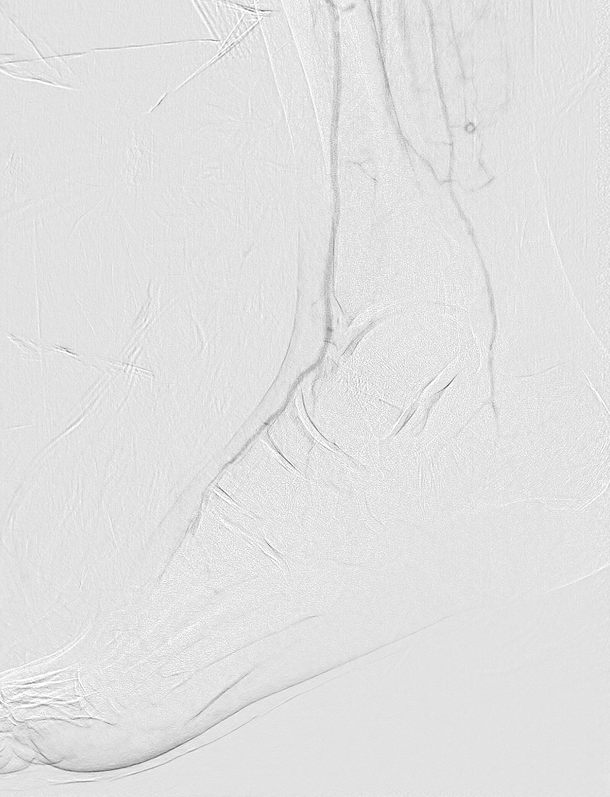
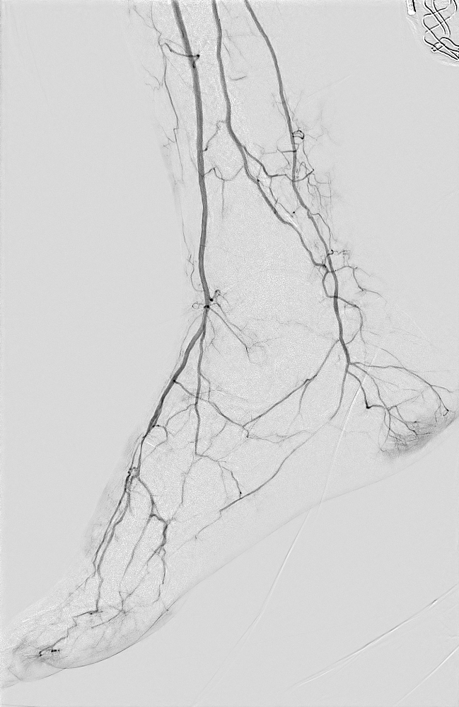
Patients with peripheral artery disease and foot ulcers, foot gangrene, or rest pain are generally advanced in age and have multiple comorbidities. Clinical judgement and an increasingly- multidisciplinary approach to managing perioperative risks should be employed for pedal bypasses as for other types of bypasses. Comorbidities alone, however, should rarely preclude bypass surgery, though, as leg amputation seems to have higher risk-adjusted perioperative mortality (Barshes et al. 2011). One particular comorbidity that should be discussed here, however, is advanced chronic kidney disease and end-stage renal disease. It is probably best to optimize endovascular interventions, as infrainguinal bypass has poorer clinical outcomes does not seem to be cost-effective for this population (Barshes, Kougias, et al. 2014). Furthermore, advanced kidney disease is much more often associated with loss of pedal artery patency(Haine et al. 2018), and are at a much higher risk for bypass occlusion(Benedetto et al. 2021) and delayed wound healing(Kodama et al. 2022). For these reasons, patients with advanced kidney disease who seem to have a pedal target on angiography probably do not make good candidates for pedal bypasses.
Pedal bypasses are done almost exclusively with vein (Kodama et al. 2022). The mismatch of a larger caliber PTFE graft to a small caliber pedal artery is generally incompatible with durable patency. From the extremely low frequency (0.20-1.1%) of use, these graft may represent a fall-back position in a case that was underway and found to have inadequate vein conduit rather than an intended conduit. When outcomes specific to these conduits are mentioned, it is usually to point out their notably poor outcome[@ eckstein1996pedal]. One exception is a series from Rome and Messina that describes performing 5 of their 64 pedal bypass cases (8%) with composite PTFE paired distally with saphenous vein graft (Benedetto et al. 2021).
The length of autogenous vein needed is dependent on the inflow artery selected. This should generally be the distal-most artery that is contiguous with the aorta and without occlusions or hemodynamically-significant stenoses proximal to it. This might be the distal superficial femoral artery, the popliteal artery, or even tibial arteries(Veith et al. 1985; Slim et al. 2021). Distal origin grafts, especially grafts originating from the popliteal artery (so-called “short” bypasses) perform as well as grafts originating from the common femoral. One trial that randomized the source of inflow saw a trend toward distal origin grafts having better primary patency at five years than grafts originating from the common femoral artery (p=0.08)(Ballotta et al. 2004). Two non-randomized series of pedal bypasses have also reported significantly better patency with distal origin grafts than with bypasses from the common femoral artery(Saarinen et al. 2016).
Therefore, since autogenous vein conduit is so critical, time should be spent on a sonographic assessment looking for suitable vein. Great saphenous, forearm and upper arm segments of the cephalic and basilic veins, and lesser saphenous should all be examined. Two upper arm/forearm segments or perhaps one long length of lesser saphenous vein can be enough for a bypass with the popliteal as the inflow source. With the common femoral as an inflow source, it typically takes three segments: two lesser sapheni or two forearm veins plus an arm vein, for example. The performance of arterial and venous allografts is poor, making these a suboptimal choice (Barshes et al. 2013). Patients without adequate autogenous vein should be offered palliative wound care or, in some select cases, a leg amputation(Barshes, Gold, et al. 2014).
Once a patient with a pedal target is deemed to have suitable operative/anesthestic risk and found to have sufficient autogenous vein, two additional questions should be answered: Is there sufficient caliber and outflow to maintain patency? And: Will the outflow target plausibly increase blood flow to the region of interest?
The caliber of the target artery has generally been assessed qualitatively on angiography, though, as mentioned above, ultrasound imaging to confirm that the pedal target is at least 1.8 millimeters in diameter may be helpful beyond this. An absent pedal arch negatively impacts wound healing (Kodama et al. 2022), primary patency, and major adverse limb events (Kodama et al. 2022). Nonetheless, few patients undergoing pedal bypass have an intact pedal arch (Kodama et al. 2022), and the outcomes of pedal bypasses in .
“Wound blush” – a dense area of fine contrast opacification seen on angiography in an area around a wound – has been promulgated as an endpoint for endovascular intervention, as patients with wound blush have a higher rate of wound healing as those who do not(Utsunomiya et al. 2017). In a series of 100 consecutive diagnostic angiograms done on patients with non-healing foot ulcers, our group noted wound blush in 63 limbs, 34 of which had extensive peripheral artery disease (specifically, Global Limb Anatomic Staging System(Conte et al. 2019) stage II or III). Thus wound blush is frequently seen with foot ulcers, including in patients without inline flow to the foot. Together with its association with wound healing, this observation may therefore indicated that pre-operative wound blush is a parameter that may reflect microvascular disease. Absence of wound blush should not preclude revascularization.
Medial artery calcifications should be identified. A plain radiograph in two views can help determine the presence of medial artery calcification in pedal targets. Thick, tubular medial calcification might make the distal anastomosis very challenging, even if the fracture technique(Ascer et al. 1986) is employed. Furthermore, medial artery calcification might also be an indication of outflow disease affected by diabetic arteriopathy and prognostic of lower healing rates (Liu et al. 2022).
Prior to the application of the angiosome concept to limb salvage, the reporting of dorsalis pedis bypasses outcomes for heel ulcers helped establish the idea that an “indirect” revascularization can provide arterial perfusion sufficient for healing a wound in an angiosome different from that of the target artery(Berceli et al. 1999). Subsequent research has confirmed this (Rashid et al. 2013). A target artery in the angiosome of a wound is frequently absent. This situation should not preclude bypass but should be discussed with the patient as affecting the rate of wound healing.
A close reading of the angiogram can help avoid high outflow resistance that could threaten the patency of the bypass. The typical branches originating from the dorsalis pedis artery include the anterior lateral and anterior medial malleolar arteries, the lateral and medial tarsal arteries, the arcuate artery, and the first dorsal metatarsal artery. The dorsalis pedis artery terminates as the descending vertical segment of the vessel – also known as the first proximal perforating artery – dives into the first interosseous space. There are an average of five (range two to nine) skin perforators to the dorsal foot, with an average diameter of 0.5mm(Garcia-Pumarino et al. 2010). Variations in the anatomy of the dorsalis pedis artery and its branches are common. The most common variations are related to the arcuate artery, either: the arcuate artery originating more proximally on dorsalis pedis artery, at the level of the cuneonavicular joint rather than the tarsometatarsal joint; or the arcuate artery being absent, with dorsal metatarsal arteries to digits two to five instead originating from a long common dorsal metatarsal artery or a the distal continuation of a lateral tarsal artery (Sarrafian and Kelikian 2011).
In general, the dorsalis pedis artery is the most preferable of the pedal arteries. As mentioned above, it has the best clinical outcomes. It is generally a larger caliber than other pedal arteries (mean 2.7mm) (Garcia-Pumarino et al. 2010). Its outflow contributes to a larger portion of the foot than other pedal arteries, including the majority of the forefoot in most patients. Finally, the exposure of the dorsalis pedis artery is simple (see below) and achieved without the need to incise glabrous skin or muscle.
A bypass to the paramalleolar segment of the distal posterior tibial artery could be beneficial to patients with heel ulcers. [Note: although some surgeon-authors use the term “common plantar artery” for this segment, this term is not used by anatomist authors and is not recognized by Terminologia Anatomica]. This segment of the posterior tibial artery has four branches: (1) an anastomotic branch that joins with an artery off the posterior (calcaneal) branch of the peroneal artery to form the perimalleolar arterial circle; (2) a posteromedial malleolar artery, which passes anteriorly to join with the anterior medial malleolar artery to form the medial malleolar rete; (3) a calcaneal branch, also known as the calcaneal ramus; and the artery of the tarsal canal.
A lateral plantar artery target could be most beneficial to patients with ulcers of the lateral forefoot, including the lateral foot along the glabrous/non-glabrous skin border and the dorsolateral foot region of non-glabrous skin. Along its course, the lateral plantar artery gives off an average of 8-10 skin perforators, each about 1cm apart. Some of these perforating arteries pass through the flexor digiti minimi and abductor digiti minimi muscles. The fibular plantar superficial artery (a.k.a. superficial fibular plantar artery) is a consistent arterial branch that runs along the lateral and plantar aspect of the fifth metatarsal. Branches from this artery wrap around the fourth and fifth metatarsals, and distal branches from this fibular plantar superficial artery communicate with branches of the dorsalis pedis artery. This artery is consistently present (Ebisudani 2008). More distal branches include deep plantar metatarsal (a.k.a. proximal perforating or posterior perforating) arteries and either superficial plantar metatarsal or superficial plantar intermetatarsal arteries. As mentioned above, the termination of the lateral plantar artery is the deep plantar arch, where it joints with the distal aspect of the dorsalis pedis artery.
The lateral plantar artery is preferred over the medial plantar as a target for pedal bypass for a few reasons. First, whereas the lateral plantar artery contributes to the circulation of the forefoot through the deep plantar arch, the medial plantar artery has negligible contribution to the forefoot (only possible via the tibial branch of the deep branch of the medial plantar artery, which could contribute indirectly to the dorsalis pedis outflow region through the first dorsal metatarsal artery)(Sarrafian and Kelikian 2011). Second, according to Hidalgo and Shaw [Hidalgo & Shaw], the lateral plantar artery is larger than or equal to the medial plantar artery in 93%% of people (Sarrafian and Kelikian 2011). Finally, the only contribution the medial plantar artery has to the forefoot might be in zone 2 (midfoot). Compared to branches of the lateral plantar artery, branches from the medial plantar artery to the heel are fewer, smaller in caliber, and are sometimes nonexistent (Hidalgo and Shaw 1986). Nonetheless, a medial plantar artery target could be most beneficial to patients with ulcers of the midfoot or perhaps the forefoot. Branches to metatarsals one and two (Hidalgo and Shaw 1986). If it has any contribution to blood flow in the plantar foot, it is limited to zone 2 (midfoot) and through cutaneous perforators only, not through myofascial vessels.
A lateral tarsal artery target could be most beneficial to patients with ulcers of the lateral forefoot (zone 3), dorsolateral foot, or perhaps the lateral forefoot or lateral heel, depending on patency of outflow and collateralization. In a study of 40 cadavers by Ebisudani (Ebisudani 2008), the lateral tarsal artery was uniformly present and had a mean diameter of 1.3mm. Outflow branches of the lateral tarsal artery include a longitudinal branch to the second intermetatarsal space, a transverse branch to the third cuneiform, and plantar perforating branch or branches that communicate with the lateral plantar artery. It is through this communication that the lateral tarsal artery could, indirectly, increase perfusion to the forefoot. Increased perfusion to the lateral heel could potentially come from communication of the lateral tarsal artery with the anterior lateral malleolar artery and/or the perforating branch of the peroneal artery, both located proximal to the lateral tarsal artery. A separate proximal lateral tarsal artery is sometimes also present. This would be less desirable still as a target artery. Its outflow is comprised of a longitudinal branch or branches to the third intermetatarsal space and a transverse pedicle branch that goes to the talar head and lateral aspect of the talar body.
On the day of surgery, the surgeon should mark the a length of the proposed pedal target artery using a handheld (continuous-wave) Doppler with a pencil tip. After centering exactly over the location with the maximum amplitude signal, this smaller-caliber tip allows much more precise localization of the artery than even the smallest linear-array Doppler probe (such as a “hockey-stick” shaped 12-15 MHz probe). Pushing in and rotating gently after finding the maximum signal intensity transiently indents the skin enough to allow the ultrasound gel to be wiped away and for this precise location to be marked with a skin marker. This process is repeated over at least 4 centimeters, resulting in a line marking the course of the target artery. After this is done, the skin area should be wiped to remove any remaining ultrasound gel, and the line should be darkened more with another fresh skin marker, preferably a Chloraprep-resistant marking pen. This mark will help the surgeon consistently place the skin incision directly over the target artery, even if some of the common anatomic variations in the artery are present.
Contemporary vascular surgeons should routinely map and mark veins for bypass on the day of surgery. This saves operative time and significantly reduces saphenectomy harvest complications (Aguirre et al. 2019). Centering the saphenous vein on the ultrasound monitor when using 12-15 Megahertz (“hockey-stick”) probe (5-10 Megahertz probe in large patients) facilitates placing a skin marking directly over the vein, thereby reducing dissection in multiple tissue planes to find the vein, excessive retraction, or thinning the soft tissue on one side of the soft tissue flap.
Special considerations should be made if a long length of vein is needed, e.g. to reach from the common femoral artery to the dorsalis pedis to the level of the foot, and the saphenectomy extends to the medial marginal vein and the dorsal venous arch in the foot (the peripheral-most aspects of the vein that is in continuity with what is called the great saphenous vein). In particular, the incision should extend not much more distal than the incision used for the dorsalis pedis artery exposure to avoid a creating a long, narrow bridge of skin and soft tissue with transected cutaneous perforators.
Some instruments and supplies not typically used for popliteal or tibial targets might be particularly helpful for pedal bypasses. A Heiss retractor (Figure 2A) is helpful, especially for the initial steps of a dorsalis pedis exposure before the incision has enough depth to allow transitioning to a 2x3 Weitlaner retractor (Figure 2A). A needle-shaped electrocautery tip provides more focused cautery than a standard blade-shaped tip (Figure 2B) and should be used on a low setting (i.e. 20 Watts). DeBakey atraumatic vascular forceps, a short, fine-tipped right angle, Metzenbaum and tenotomy scissors (not iris scissors) can be useful during exposure, but Gerald forceps should be available for the anastomosis. An arteriotomy on pedal-caliber vessels should not be done with an 11-blade scalpel. A mini beaver blade or a micro 11-blade (Figure 2C) should be used instead, with fine Potts scissors or micro scissors (Figure 2D) to extend the arteriotomy. Finally, fine vascular sutures with short needles should be available. Ethicon polypropylene (Prolene®) that is 0.05 millimeters in diameter (“7-0”) has either a 9.3mm length BV-1 needle or an 8mm length BV175-6 needle. Prolene® that is 0.04mm in diameter (“8-0”) has a 6.5mm BV130-5 needle. These needles are all 3/8th circle and have a taper tip.
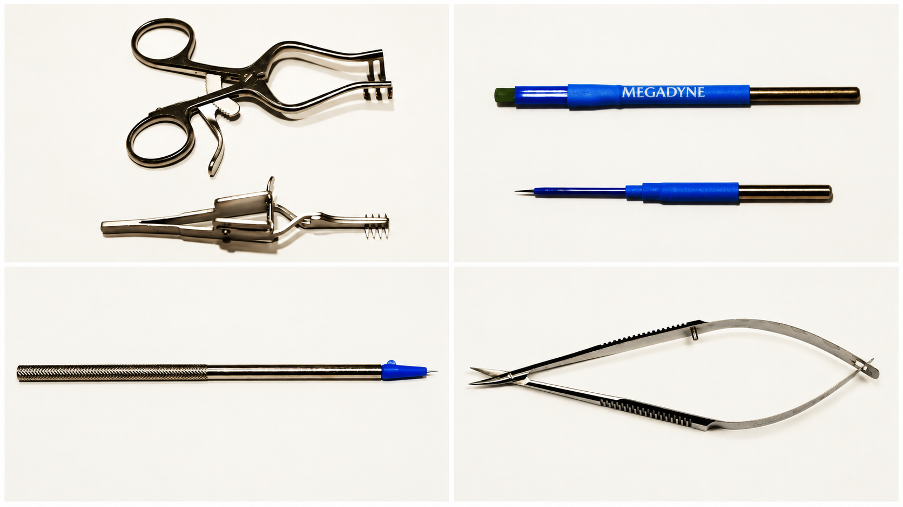
Some early authors have described use of an operative microscope (Gloviczki et al. 1994), while others have stated that the “naked eye” is sufficient for pedal bypasses (Ascer et al. 1988). Surgical loupe magnification that is 2.5x suffices and should be considered a necessary adjunct to pedal bypasses.
Supine positioning should be done as for most other infrainguinal bypasses, and skin preparation should include all planned sites of vein harvesting and at least one additional site. The author has harvested many lengths of small saphenous vein in supine position with the knee flexed and hip abducted. If the full length (from posterior to the lateral malleolus to the junction with the popliteal vein in the popliteal fossa) of what appears to be a good caliber small saphenous vein is important for the case, however, it is worth doing this with the patient in prone position, closing the incision, then redoing skin preparation with the patient in supine position for the rest of the operation.
Foot preparation should be basic. Our surgical team uses ChloraPrep™ for intact skin and Hibiclens® (chlorhexidine) rather than iodine-betadine solution for areas with epithelial defects. Areas of ulceration, gangrene, and possibly infection nearby planned incisions are common. That said, these bypasses are generally done without prosthetic materials. We mainly try to keep the planned sites of incision separate from pre-existing skin defects by using a clear plastic isolation bag, with or without sterile clear plastic towel drapes with adhesive strips (ex. Steri-Drape 1000). Ulcers that drain fluid are covered with 4x4 inch gauze. Along with the rest of the foot and calf, this ensemble is then covered with 3M Ioban™ drapes, wrapped similar to cast padding to conform to the angles of the foot and ankle. Like others, we avoid using a sterile glove to cover the forefoot to avoid any inadvertent tourniquet effect on marginally-perfused tissue.
The dorsalis pedis artery is exposed through a longitudinal incision directly over the artery on the dorsum of the foot. After incising skin and fascia, tendons of the extensor hallucis longus and the extensor digitorum longus tendons should be identified, as the dorsalis pedis artery is generally found between these structures. Identification can be aided by seeing a pair of flanking veins (Figure 3). The medial-most tendon of the extensor digitorum brevis sometimes overlays the artery, and retraction in a lateral direction is sometimes needed. The inferior edge of the Y-shaped extensor retinaculum can be incised if more proximal length is needed. The incision can extend distally over the first interosseus space if more distal exposure is needed. Distal branches of the superficial peroneal nerve also are often found overlying the artery. These can be retracted or, if necessary, transected, as these are typically terminal sensory branches and not the main trunk at this location of the foot. The terminal aspect of the deep peroneal nerve is typically lateral to the dorsalis pedis artery.
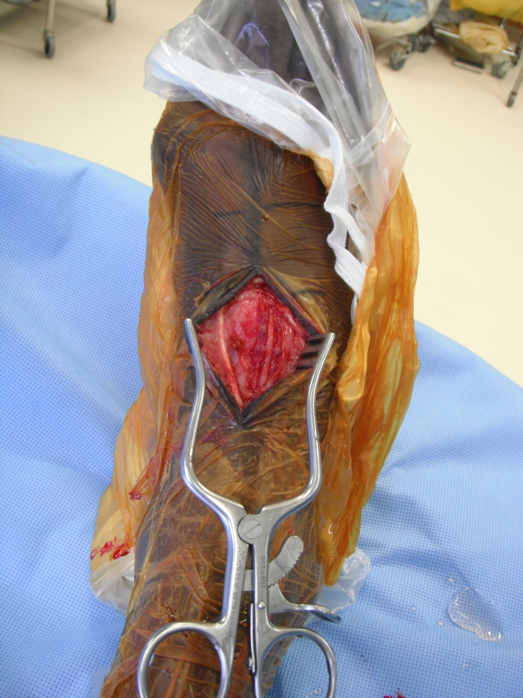
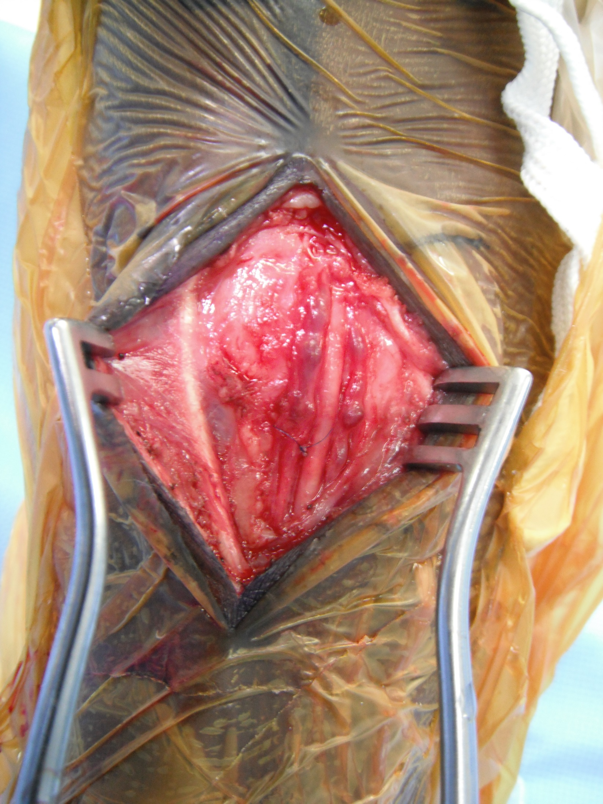
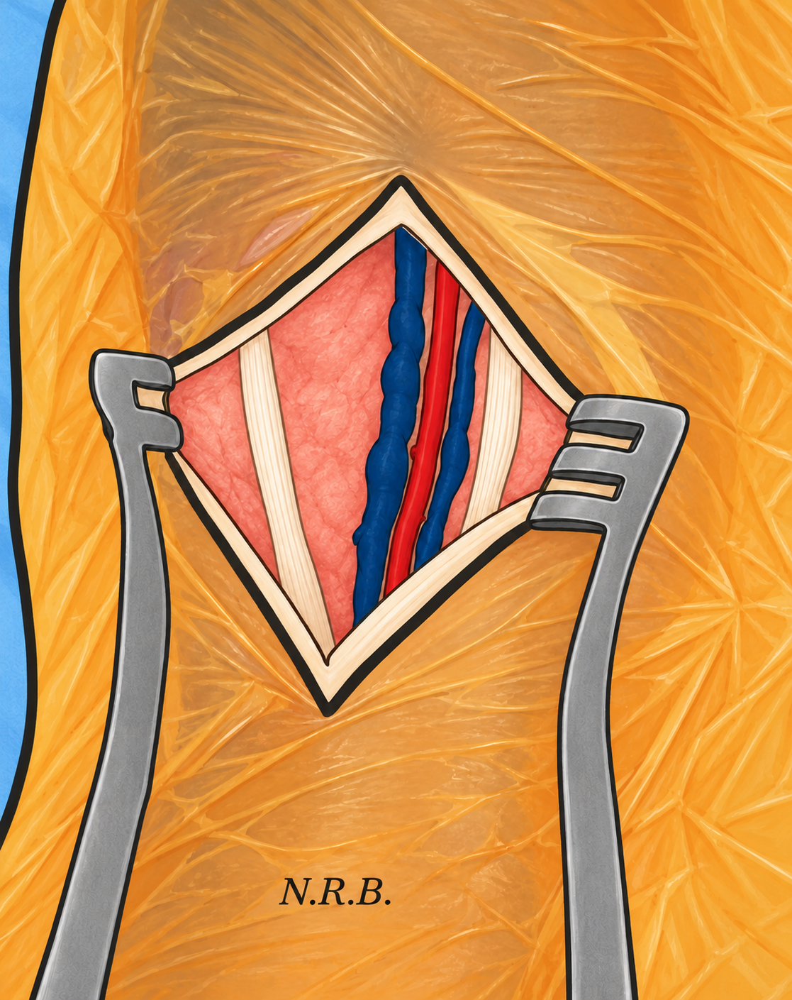
Exposure of the lateral tarsal artery starts with the dorsalis pedis artery exposure and should be aided by pre-operative Doppler signal markings. The origin of the lateral tarsal artery is 2-3 centimeters distal to the extensor retinaculum (Garcia-Pumarino et al. 2010). A direct exposure of the lateral tarsal artery using pre-operative markings based on Doppler localization has been reported. (Kuma et al. 2019)
Exposure of the descending vertical segment of the dorsalis pedis artery in the first interosseous space (I.e. between the first and second metatarsals) has been described (Ascer et al. 1988). This segment is distal to the dorsal metatarsal ligament at the proximal-most aspect of the first and second metatarsals and proximal to the dorsal interosseous muscle ring, at a typical distance of 15mm (range 6-29mm, with nearly 90% occurring within the first 20mm ) distal to the articulation of the first metatarsal with the medial cuneiform bone(Creech et al. 2018). After elevating periosteum off the proximal second metatarsal, bone can then be resected with a rongeur to allow sufficient exposure of this descending vertical segment.
At the level of the medial malleolus, the posterior tibial artery, together with two flanking posterior tibial veins, is found posterior to the tendons of the tibialis posterior and flexor digitorum longus muscles and anteromedial to the posterior tibial nerve and the flexor hallucis longus muscle (Figure 4). [Note: this artery proximal to the bifurcation into the medial and lateral plantar arteries as the posterior tibial artery; no anatomic descriptions of arterial anatomy of the foot use the term “common plantar artery”]. This artery then be followed to its bifurcation can then be followed distally to expose the plantar bifurcation. The sustentaculum tali (a medial projection of the anteromedial aspect of the calcaneus, distal to the medial malleolus) can be used as a landmark, as the plantar bifurcation is distal to its posterior border in no more than 10% of people. The lateral plantar artery should be recognized as the larger-caliber and more inferior of the two at this location. Exposure typically requires extending the incision onto glabrous (thick) skin of the medial plantar foot and transection of abductor hallucis muscle; it may also require incision of the flexor retinaculum. Direct exposure of more lateral aspects of the lateral plantar artery are challenging because of their anatomic depth and smaller caliber (Ascer et al. 1988).
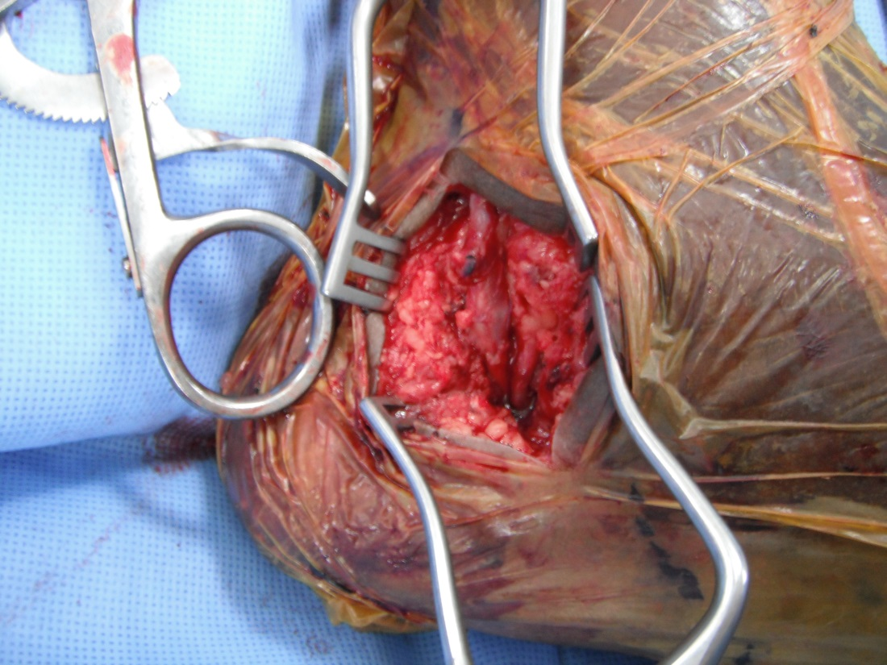
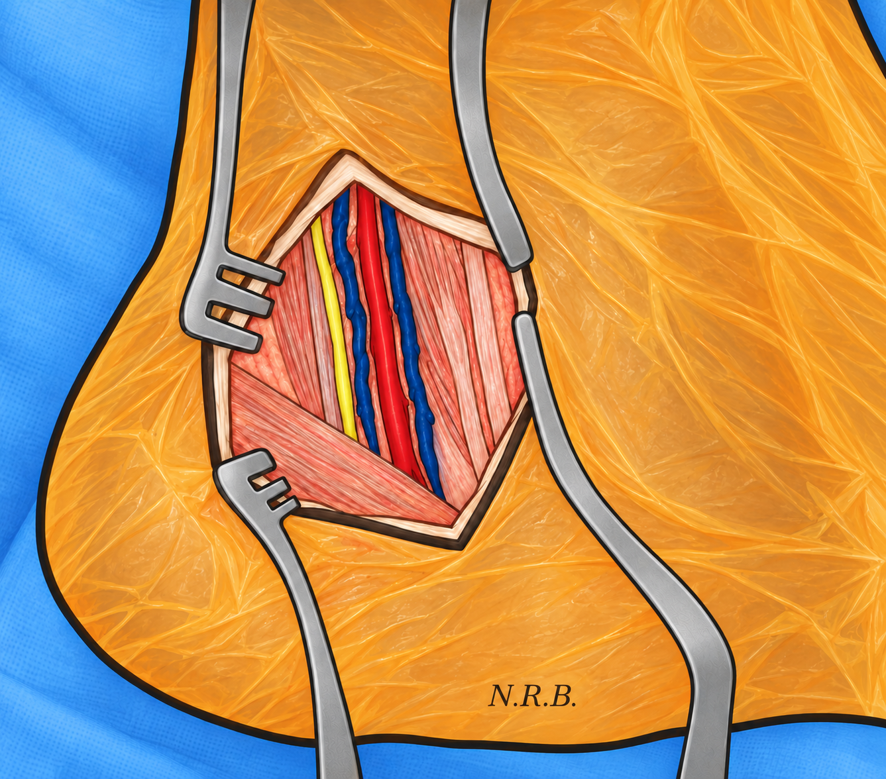
The target vessel does not need to be exposed and controlled circumferentially, as alternative forms hemostasis after the arteriotomy might be preferable to vessel loops and vascular clamps. At this point in the case, a length of at least 4cm of the target artery should be exposed. Exposure need not be circumferential; only enough circumference for placement of adequate arterial bites is needed. Consider temporary closure with staples at this time while vein harvesting and inflow exposure is completed.
Concerns about graft compression when crossing the ankle joint and about dehiscence of the distal target exposure incision seem to be the two main reasons for hesitancy among surgeons who do not often perform pedal bypass. Skin perforators to the dorsal foot skin is from the dorsalis pedis artery [garcia2010vascular], so it is plausible that exposure of the dorsalis pedis artery, especially if accompanied with harvesting the dorsal venous arch of the foot (the peripheral-most vein in continuity with the great saphenous vein).
Two main tunneling strategies seem to be employed by contemporary vascular surgeons: (1) subcutaneous tunneling through an anteromedial route; and (2) deep tunneling in an anterolateral route through the interosseous membrane. The subcutaneous technique seems to be the most commonly used overall and has been used by the Beth Israel Deaconness group in Boston. In this technique, a vein graft originating from the distal popliteal artery is brought out through the surgical field, above the fascia, and through a subcutaneous tunnel to the distal calf, about 10cm (?) above the medial malleolus. If an incision at the ankle level is not already present for saphenectomy, an incision should be made to bring the vein graft through. A 7-inch Schnidt tonsil clamp or other similarly-sized clamp with a single curve should then be passed in a subcuticular plan from the incision used for the dorsalis pedis artery exposure, between the anterior aspect of the medial malleolus and the tendon of the tibialis anterior muscle, then to the tunnelling incision in the distal calf.
The single most important aspect of the subcutaneous strategy is to tunnel the graft to the proximal-most aspect of the arterial exposure incision; the graft should not be tunneled distal to this incision [F. Pomposelli, personal communication]. Tunneling the graft more distal would risk disruption of skin perforators, especially if a parallel saphenectomy incision on the medial forefoot is present (Figure 5).
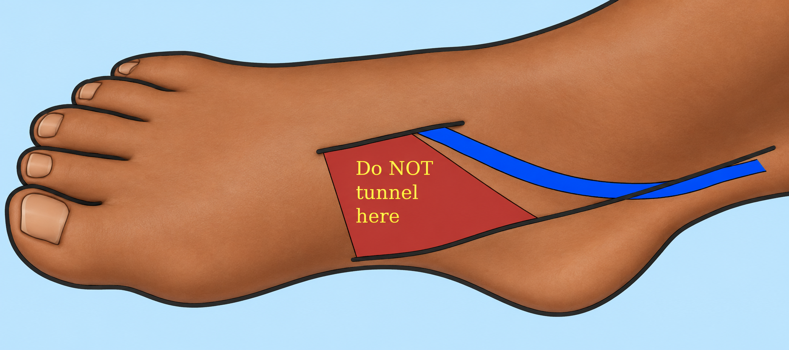
The Italian vascular surgeon Dr. Francisco Spinelli and his vascular surgeon son, Dr. Domenico Spinelli, have published some details describing their technique of tunnelling from a distal popliteal artery inflow site and through the interosseous membrane of the calf to get to a pedal distal target (Benedetto et al. 2021). Upon request, Dr. Francisco Spinelli provided more detail still (graciously communicated by Dr. Domenico Spinelli). I had contacted him to ask for further details on four aspects of this tunneling strategy: (1) avoiding injury to the deep peroneal nerve; (2) the axial location for the inflow arteriotomy and proximal anastomosis on the popliteal artery; (3) avoiding compression from the tibialis anterior muscle; and (4) the graft’s tunnel location from the interosseous membrane to the ankle. Dr. Spinelli’s reply, in his own words:
“The deep peroneal nerve lies close to the anterior tibial vessels in the deep portion of the anterolateral compartment. From the medial approach, with the knee flexed 45° and the thigh lying on a lateral support in abduction, a wide access to the interosseous membrane is gained by separating the soleus, the flexor digit[orum] longus and the tibialis posterior muscles altogether from the posterior aspect of the tibia. It is important to carry the dissection in close contact to the bone, in order to avoid muscle damage and bleeding.
“Once the interosseous membrane is reached, the muscles are retracted posteriorly. Then I used to make a small longitudinal incision with the scalpel on the membrane, and I slip inside the blade of the scissors taking care to stay close to the deep aspect of the membrane in order to avoid the neurovascular bundle lying beneath. The membrane is wide[ly] opened and some transversal cuts are made to avoid any further stricture and compression to the bypass. Through the opening you fall just on the neurovascular bundle, that can be easily avoided. If you try you’ll realize that there is no real danger of injury of the deep peroneal nerve.
“If the distal anastomosis has to be carried out on the proximal or middle part of the anterior tibial artery, this can be done straight from this access as the artery is reached from its deep aspect. In some occasions this could be advantageous, especially if you are short of vein. In the other cases, going distally to the juxta or inframalleolar artery, the bypass is routed parallel to the neurovascular bundle, deep in the space between the anterior tibial and extensor hallucis muscles, as you noted in the fourth question. This is an anatomic route, and there is no compression (3rd question). If needed, a small incision is made on the skin of the anterior compartment to ease the passage of the vein.
Regarding the proximal anastomosis, this is made on the medial aspect of the artery, in the most comfortable position, then the vein is passed on charge through the membrane and carried to the target artery, usually near the ankle, where it is passed just over the native artery and anastomosed from above. Consider that proximal part of the bypass is routed the same way as to the proximal posterior tibial, then a gentle curvature is made to slip it into the anterior compartment through opened membrane. To avoid compression at exercise I cut the bulky intramuscular tendon of the posterior tibial muscle, which has no clinical consequences.” [Dr. Francisco Spinelli, personal communication, July 29th, 2022].
Other authors make a separate anterolateral calf incision to also visualize the interosseus membrane from this opposite direction, further ensuring that the deep peroneal nerve and anterior tibial vessels are protected(Conte and Vartanian 2016).
From a common femoral artery inflow site, the vein graft can be tunneled subcutaneously over the anterolateral thigh, over the anterior calf; subcutaneously to the foot, anatomically to the calf, then through the aforementioned subcutaneous distal calf route; or through an anatomic path the entire way. There is probably no difference in outcome between these options (Eslami et al. 1997).
The patient should be heparinized, and the proximal anastomosis should be created using standard operative technique. The graft should then be pulled through the previously-created tunnel. Like many others, this author has preference for translocated (non-reversed) vein graft configuration and use of the Noel L. Mills valvulotome after creation of the proximal anastomosis. This configuration allows the natural angle and caliber of the saphenofemoral junction of a great saphenous vein graft to be utilized at the inflow anastomosis. It also utilizes as much of the larger caliber end without the need to do the distal anastomosis first, and it avoids a size mismatch at the distal anastomosis (arteries that are typically 1.5-2.5mm in diameter).
Next, circulation through the target artery should be controlled. As mentioned above, doing this with gentle alternatives probably minimizes trauma to the target artery compared with vessel loops and vascular clamps. The simplest would be a tourniquet inflated to at the level of the thigh or calf. The tourniquet should be inflated to 250-300 mmHg pressure after elevating the lower extremity to minimize venous distention.
A longitudinal arteriotomy should then be made, centered on the anterior-most aspect of the target vessel. For improved hemodynamics, the arteriotomy should extend into the target artery itself and not be based only over an isolated segment of proximal artery in continuity with the target artery (Ascer et al. 1988). As mentioned above, a mini beaver blade or micro 11-blade can minimize the risk of inadvertent injury to the deep side of the lumen when making the arteriotomy. If hemostatic control found to be inadequate, digital pressure of the proximal and/or distal aspects of the target artery, perhaps with Trendelenberg positioning, can be the next option. Thin vessel loops or bulldog clamps can be used if hemostasis is still not adequate(Andros 1995). Inserting a modified intravenous catheter into the target artery has been described but have the disadvantage of obscuring views of the already-small lumen. Hemostasis need not be perfect, as the amount of blood lost with imperfect control is small. Control should be sufficient enough, however, to not obscure the views needed for optimal bites on the artery and vein.
The distal anastomosis can be done with either running polypropylene in double-anchor technique (author’s preference) or parachute technique. Prior to completion of the distal anastomosis, the target artery and graft should be flushed. If vessel loops or a vascular clamp was used for hemostatic control on the distal aspect of the artery, a 1.0mm, 1.5 or 2.0mm coronary dilator should be inserted into the lumen. Doing this helps address any residual constriction left by the vessel loop or clamp, resulting in an improved appearance on completion angiogram.
A patent bypass graft with sufficient outflow should then be verified by listening to the Doppler signal on the native artery distal to the distal anastomosis. This should result in a good systolic upstroke, ideally with some diastolic component, that diminishes and returns with graft compression and release. A “waterhammer” or to-and-fro audio signal identifies a problem with the bypass. Opinions on completion angiogram following pedal bypass range from routine (Hofmann and Magometschnigg 2004) to largely unhelpful (Hughes et al. 2004). This author performs completion angiograms in select cases, most often to clarify quality of outflow if pre-operative angiography did not fully visualize this (Figures 7 and 8). This is done with a 16 or 18 gauge intravenous catheter placed retrograde through a ligated branch on the vein graft or in a large caliber segment of the graft.
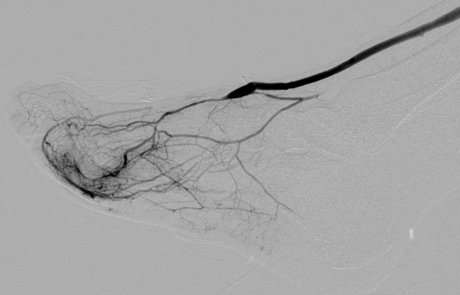
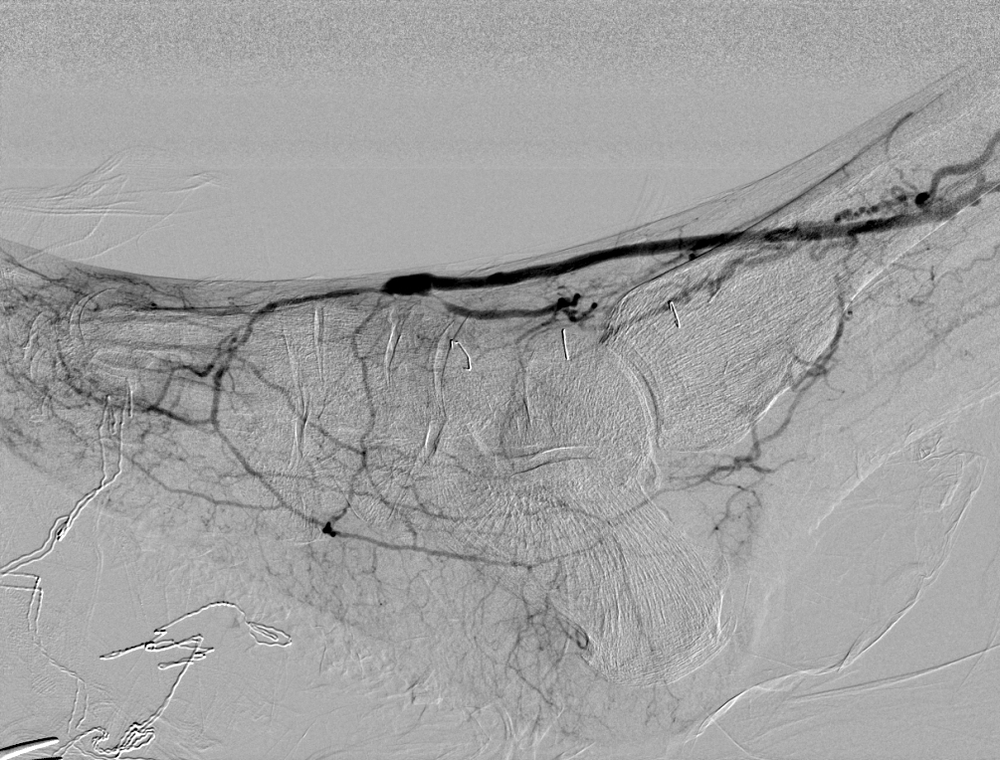
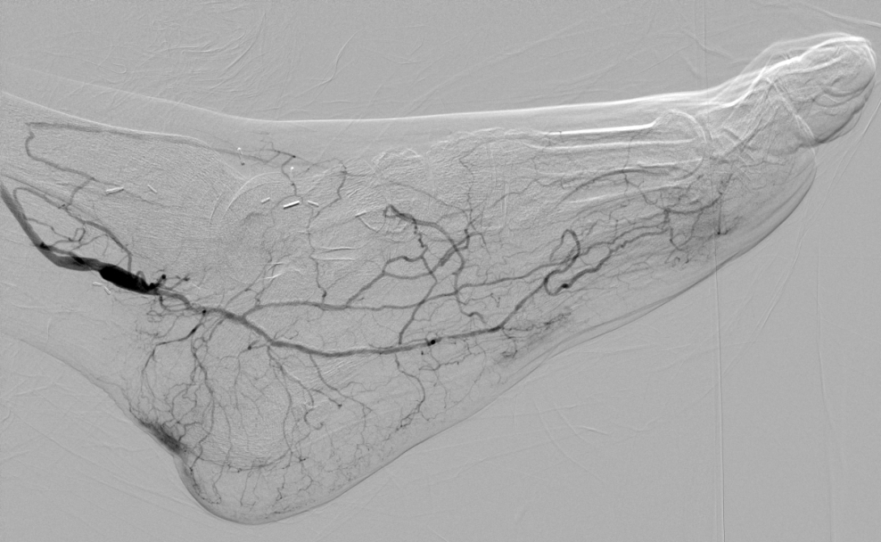
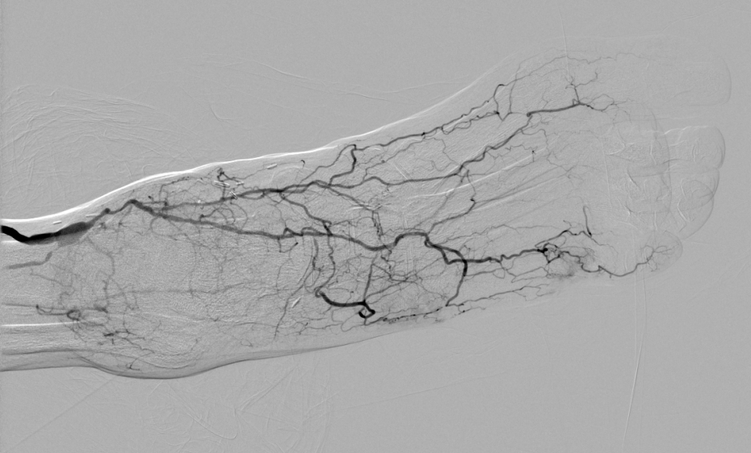
The main to minimize wound dehiscence if tension is noted at closure is the “relaxing” incision approach: closing the distal arterial exposure incision and leaving another incision open. This other incision should be a pedal saphenectomy incision, if present. If not present, a counter incision – typically on the medial foot for a dorsalis pedis or plantar artery bypass, sometimes on the lateral aspect of the dorsal foot for a dorsalis pedis bypass – is made. The arterial exposure incision is closed, and the saphenectomy incision or counter incision is left open. The open incision can be later covered with a skin substitute, a bilayer dermal matrix, or a split-thickness skin graft. This approach has been well known for years but not described in the medical literature until recently (Tsuji et al. 2020). Another reported strategy is “pie crusting” (Robison et al. 1995): creating multiple rows interspaced of 4-5mm stab incisions through the dermis and epidermis. Similar to a relaxing incision, the intent is to reduce lateral tension on the arterial exposure incision.
Early post-operative care for pedal bypass patients is largely similar to that of patients who undergo tibial bypasses. Routine elevation of the limb can help decrease post-operative edema. The opinion of elastic wraps to limit edema of the foot and ankle is mixed. Some surgeons describe and recommend frequent use of elastic wraps (Hughes et al. 2004), while others avoid them. It is this author’s experience that wraps can be very helpful in limiting post-operative swelling. Occluding an arterialized vein graft – even if tunnelled subcutaneously – might be likely only with intentional effort. The bigger risk is skin injury. So, if used, Webril™ or other cotton fiber undercast padding is preferred as the initial layer over woven gauze such as Kerlix™. Only some of the elasticity of the elastic dressing should be utilized. If Doppler signals are to be checked, the surgeon should mark the signal before wrapping, then cut windows in the elastic wrap and the underlying cast padding (Figure 8) directly over the pre-marked signal location. Our group writes specific post-operative orders to forbid any manipulation of the dressing to check signals other than those in the windowed areas of the dressing. This is also typically written on tape placed on the dressing for redundancy. The prohibition against wrap manipulation is to prevent folding or stretching the elastic while searching for irrelevant signals – a deformity in the wrap that could, if left in place, cause pressure injury to skin. The elastic wrap should be removed daily for brief breaks before reapplication. The dressing should be removed immediately if any worsening pain or subjective tightness is reported.
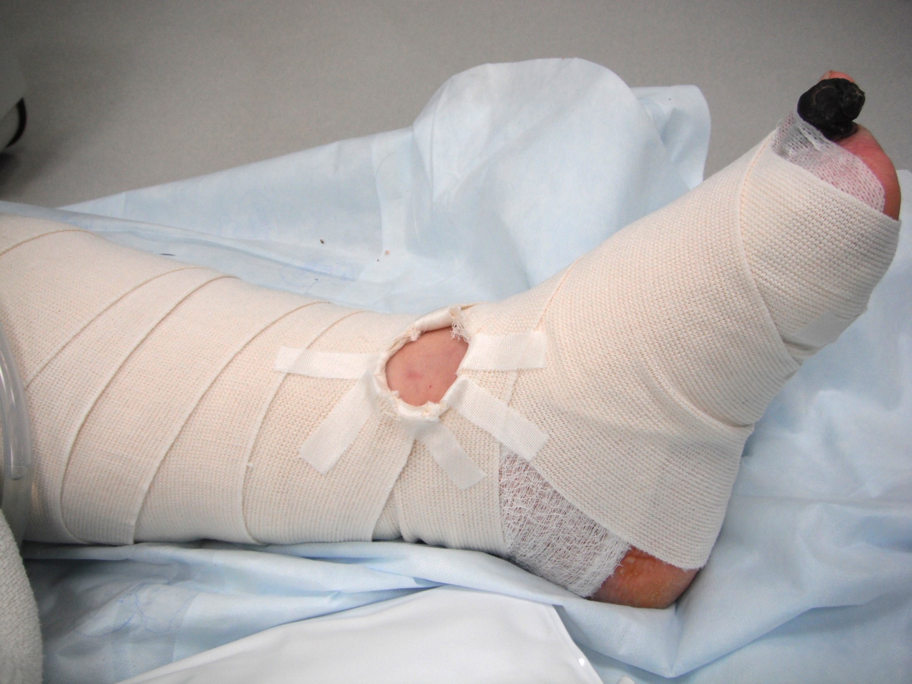
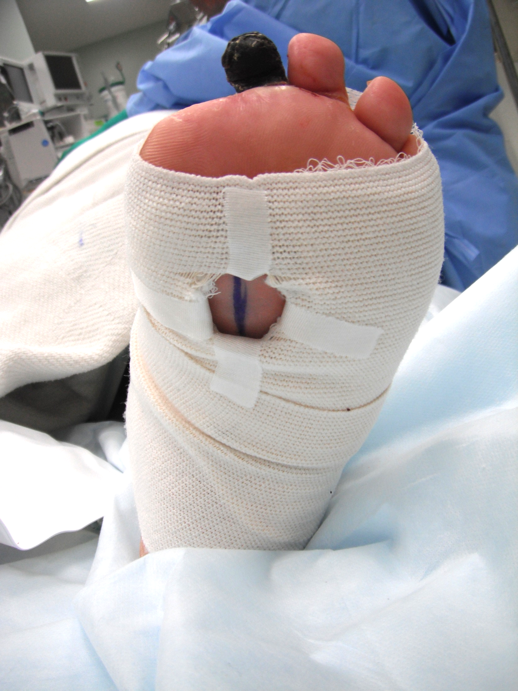
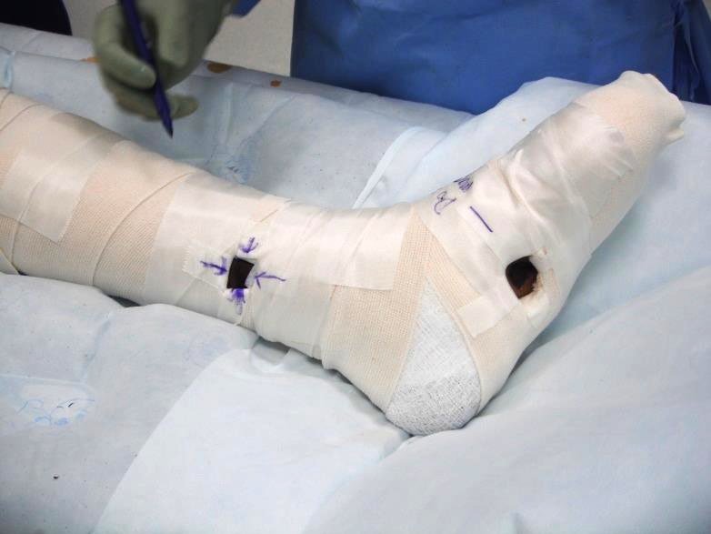
Aspirin alone seems to be the most common long-term post-operative antiplatelet/anticoagulant regimen(Saarinen et al. 2016), though some surgeons do describe prescribing warfarin (Abualhin et al. 2018). Ultrasound surveillance should be done per institutional protocols, probably with shorter intervals for patients with spliced vein grafts than for those with single segment vein conduits.
Perhaps the most discussed (though infrequently written-about) complications of pedal bypass is dehiscence of the skin incision used for the dorsalis pedis artery exposure, possibly with necrosis of skin and soft tissue at this site. As mentioned above, post-revascularization swelling probably contributes to the former, while disruption of skin perforators originating from the dorsalis pedis artery probably accounts for the latter. Surgical site infections at this distal exposure site have been reported in nearly 10% of patients (Robison et al. 1995), but “severe limb-threatening” wound complications are reported to have occurred in only 2% of the Beth Israel Deaconness series(Pomposelli et al. 2003).
Patients recognized as having dehiscence with an exposed pedal bypass graft should be hospitalized. The graft should be covered to avoid dessication. This can be done with petroleum gauze directly on the graft, then 2x2 inch dry gauze, followed by a semiocclusive dressing such as Tegaderm®. Operative debridement should be performed the same day if any clinical signs of soft tissue infection are seen. If uninfected, options for definitive coverage should be discussed with a plastic surgeon. Patients describing any bleeding should have an Esmark (elastic) bandage at bedside, available for immediate application if further bleeding is noted.
The simplest approach to address dehiscence with exposed graft is the use of a local, rotational fasciocutaneous flap (McPhee et al. 2003). This is a flap that is comprised of skin, dermis, any subcutaneous fat, and fascia of the dorsum of the foot. The preserve skin perforators, this flap should have a length:width ratio less than 1.8:1. The fasciocutaneous flap is rotated to cover the exposed vein graft. The open donor site that results can be covered with a meshed, split-thickness skin graft. Bilayer dermal matrices or skin substitutes can alternatively be used for these donor sites.
Approaches to the management of exposed bypass grafts in the calf might also be applied to the dorsal foot, including negative pressure dressings (Paolini et al. 2022), rotational gastrocnemius flaps (Nabulyato et al. 2014), and free tissue transfers (Gooden et al. 1997). Gangrene of areas proximal to the foot – so-called “interval gangrene” (Dardik et al. 1991) – may necessitate optimization of the profunda femoris artery and/or other plastic reconstructive options.
As described above, pedal branch bypasses have a higher rate of early graft failure than bypasses to the dorsalis pedis artery or to tibial arteries. Because these bypass grafts represent the distal-most anastomotic option and are generally offered as the last or only revascularization option, some surgeons have described a policy of not re-operating in the event of early graft failure. Attempts at thrombectomy (Hughes et al. 2004) and revision or early re-operative bypass (Domenig et al. 2007) have had a low rate of success.
Bypasses to pedal arteries provide excellent outcomes and should continue to be an option for patients with severe peripheral artery disease and gangrene, ulcers or ischemic rest pains. High quality digital subtraction angiography with two orthogonal views of the foot is fundamental to identifying adequate pedal targets for bypass. Adequate autogenous vein is also prerequisite for a pedal bypass. The technical aspects of pedal bypasses are within the capabilities of all vascular surgeons. Despite being developed more than a half century ago, the technique of and patient selection for pedal bypass continues to be refined and improved.
The author would like to acknowledge the following persons: Francisco Spinelli, M.D. and Domenico Spinelli, M.D. for the aforementioned text, video and photographs demonstrating their technique of deep tunneling through the interosseous membrane; Frank Pomposelli, M.D. for discussion on tunneling technique and the annotated photograph that was used as the model for Figure 5; Mark Eskandari, M.D. for the invitation to present and write on this topic; and Michael Belkin, M.D. and Matthew T. Menard, M.D. for the teaching and mentorship that began during the author’s fellowship training at the Brigham and Women’s Hospital.
This version of the chapter is the author’s revised version. Material from an earlier version was presented at the 46th Annual Northwestern Vascular Symposium in Chicago, Illinois on December 9th, 2022, and published in the accompanying course textbook: Eskandari MK, Pearce WH, Yao JST. Current Vascular Surgery. New Haven: People’s Medical Publishing House, USA, Ltd. 2022.
OpenAI’s ChatGPT/Codex and image-generation tools assisted with document formatting, electronic publication preparation, and visual editing. The author’s original hand-drawn illustrations were refined through changes to linework, color, texture, backgrounds, and contours. Generative image editing was also used to harmonize the backgrounds and assemble the instrument photographs in Figure 2. Generative AI was not used to modify any angiograms or intraoperative anatomy images. The author retains responsibility for the accuracy and integrity of the final text and figures.